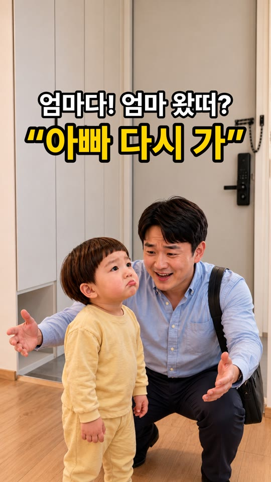
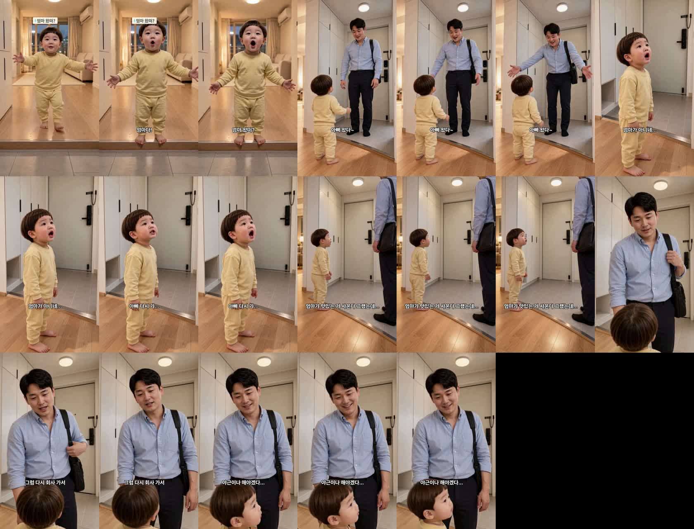
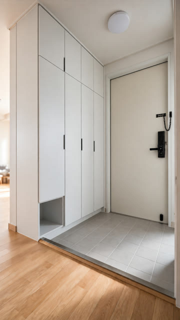
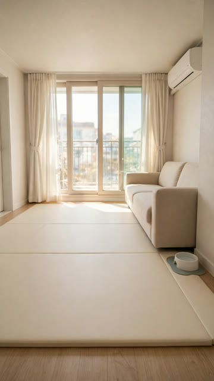

«아빠 왔다~» 편 — 검수 (다시 만든 판)
대표님 재정리 흐름 · 18.6초 · 5컷 · 등록 안 함 — 보시고 정해 주세요 · 새 재발 방지 장치로 만든 첫 편
완성본

썸네일 — 삐죽 도윤 + 팔 벌린 아빠
대사
- 도윤 «엄마다! 엄마 왔떠?» — 거실에서 뛰어나와 마루 끝에 멈춤
- 아빠 «아빠 왔다~» — 기분 좋게 두 팔 벌림
- 도윤 «엄마가 아니네… 아빠 다시 가…»
- 도윤 «엄마가 맛있는 거 사온다 그랬는데…»
- 아빠(시무룩) «그럼 다시 회사 가서 야근이나 해야겠다…»
컷별 대조 (새 검수 항목)
| 컷 | 자리(앞 컷과) | 배경(세트 정본) | 시선 |
|---|---|---|---|
| 1 | 거실 → 마루 끝에 멈춤(타일로 안 내려옴) | 거실 세트 | 도윤→현관문 |
| 2 | 1컷 끝 그대로 | 현관 세트 | 아빠→도윤 · 도윤→아빠 |
| 3 | 그대로 | 현관 세트(신발장·문) | 도윤→아빠 |
| 4 | 그대로 | 현관 세트 | 도윤→아빠 |
| 5 | 그대로 · 아이 한 명 | 현관 세트(첫 판은 다른 복도 → 다시 뽑음) | 아빠→도윤(내려다봄) |
들어 봐 주세요
4컷 «엄마가 맛있는 거 사온다 그랬는데…» 도윤이 음높이 286Hz — 정본 경고선 330Hz 아래입니다. H3 가 seed 고정이라 연기 줄을 바꿔도 같은 소리가 나왔습니다. 3컷 «아빠 다시 가…»는 356Hz 로 아기 목소리입니다.
완성본 프레임

대조한 세트 정본

현관 세트(걸쇠 고친 판)

거실 세트(1컷 배경)